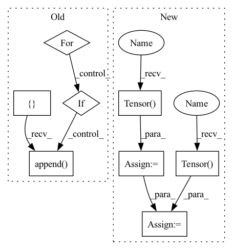

Pattern ID :10944
Before Change
//persistence0 = torch.split(persistence0,1,2)
//persistence0 = [p.squeeze(-1) for p in persistence0]
persistence0 = []
persistence1 = []
for f_idx in range(self.num_filtrations):
batch_cpu = batch.clone().to("cpu")
batch_p_ = batch_persistence_routine(
filtered_v_cpu[:, f_idx], batch_cpu, self.dim1)
if self.dim1: // cycles were computed
persistence0.append(batch_p_[0].to(filtered_v_.device))
persistence1.append(batch_p_[1].to(filtered_v_.device))
else:
persistence0.append( batch_p_.to(filtered_v_.device))
return persistence0, persistence1
def compute_coord_fun(self, persistence, dim1=False):After Change
filtered_e_, _ = torch.max(torch.stack(
(filtered_v_[edge_index[0]], filtered_v_[edge_index[1]])), axis=0)
vertex_slices = torch.Tensor( batch.__slices__["x"]) .cpu().long()
edge_slices = torch .Tensor( batch.__slices__["edge_index"]) .cpu().long()
persistence0_new, persistence1_new = compute_persistence_homology_batched(
filtered_v_.cpu(), filtered_e_.cpu(), edge_index.cpu(),
vertex_slices, edge_slices)
In pattern: SUPERPATTERN
Frequency: 3
Non-data size: 8
Instances Fragment ID: 37831735
Project Name: borgwardtlab/togl
Commit Name: d20d6ebabff33a117632601e58e45ab4f8503c51
Time: 2021-01-25
Author: max.horn@bsse.ethz.ch
File Name: topognn/models.py
M Class Name: TopologyLayer
N Class Name: TopologyLayer
M Method Name: compute_persistence(3)
N Method Name: compute_persistence(3)
M Parent Class: torch.nn.Module
N Parent Class: torch.nn.Module
M File Name: topognn/models.py
N File Name: topognn/models.py
M Start Line: 69
M End Line: 94
N Start Line: 70
N End Line: 104
Before Change
//persistence0 = [p.squeeze(-1) for p in persistence0]
persistence0 = []
persistence1 = []
for f_idx in range(self.num_filtrations):
batch_cpu = batch.clone().to("cpu")
batch_p_ = batch_persistence_routine(
filtered_v_cpu[:, f_idx], batch_cpu, self.dim1)
if self.dim1: // cycles were computed
persistence0.append(batch_p_[0].to(filtered_v_.device))
persistence1.append( batch_p_[1].to(filtered_v_.device))
else:
persistence0.append(batch_p_.to(filtered_v_.device))
return persistence0, persistence1After Change
filtered_e_, _ = torch.max(torch.stack(
(filtered_v_[edge_index[0]], filtered_v_[edge_index[1]])), axis=0)
vertex_slices = torch.Tensor( batch.__slices__["x"]) .cpu().long()
edge_slices = torch.Tensor( batch.__slices__["edge_index"]) .cpu().long()
persistence0_new, persistence1_new = compute_persistence_homology_batched(
filtered_v_.cpu(), filtered_e_.cpu(), edge_index.cpu(),
vertex_slices, edge_slices)
Fragment ID: 37831734
Project Name: borgwardtlab/togl
Commit Name: d20d6ebabff33a117632601e58e45ab4f8503c51
Time: 2021-01-25
Author: max.horn@bsse.ethz.ch
File Name: topognn/models.py
M Class Name: TopologyLayer
N Class Name: TopologyLayer
M Method Name: compute_persistence(3)
N Method Name: compute_persistence(3)
M Parent Class: torch.nn.Module
N Parent Class: torch.nn.Module
M File Name: topognn/models.py
N File Name: topognn/models.py
M Start Line: 69
M End Line: 94
N Start Line: 70
N End Line: 104
Before Change
def forward(self, x, valid_len, time_step_len):
// cosntruct the fully connected graph(s)
edge_index = []
for graph_id in range(len(valid_len)):
for edge in permutations([i for i in range(time_step_len)], 2):
if edge[0] < valid_len[graph_id] and edge[1] < valid_len[graph_id]:
edge_index.append( [edge[0] + graph_id*time_step_len, edge[1] + graph_id*time_step_len])
edge_index = torch.tensor(edge_index).transpose(1, 0)
edge_index, _ = add_self_loops(edge_index, num_nodes=x.size(0))
x = x.view(-1, time_step_len, self.in_channels)After Change
def forward(self, x, valid_len, time_step_len):
// cosntruct the fully connected graph(s)
edge_index = torch.Tensor( []) .to(self.device)
for graph_id in range(len(valid_len)):
node_list = torch.Tensor( [i for i in range(valid_len[graph_id])]) .to(self.device) + graph_id*time_step_len
edge_index = torch.cat((edge_index, torch.combinations(node_list, 2)), 0)
edge_index = edge_index.transpose(1, 0).long()
edge_index, _ = add_self_loops(edge_index, num_nodes=x.size(0))
Fragment ID: 37831737
Project Name: henry1iu/tnt-trajectory-predition
Commit Name: d5d6d744a19e4a69c600bacf0dea23a00fc624c5
Time: 2021-01-15
Author: liu.jb.henry@gmail.com
File Name: core/model/layers/global_graph.py
M Class Name: SelfAttentionLayer
N Class Name: SelfAttentionLayer
M Method Name: forward(4)
N Method Name: forward(4)
M Parent Class: MessagePassing
N Parent Class: MessagePassing
M File Name: core/model/layers/global_graph.py
N File Name: core/model/layers/global_graph.py
M Start Line: 58
M End Line: 63
N Start Line: 75
N End Line: 79